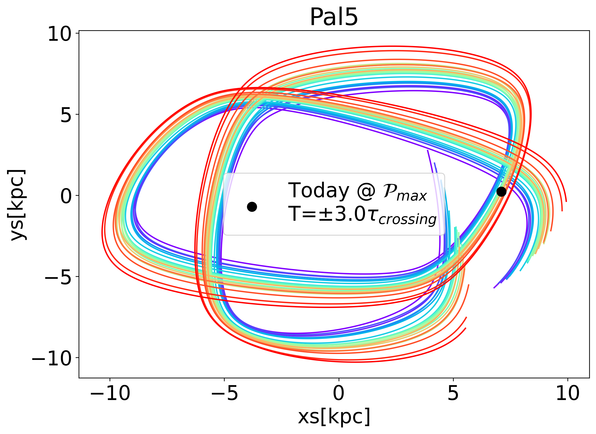
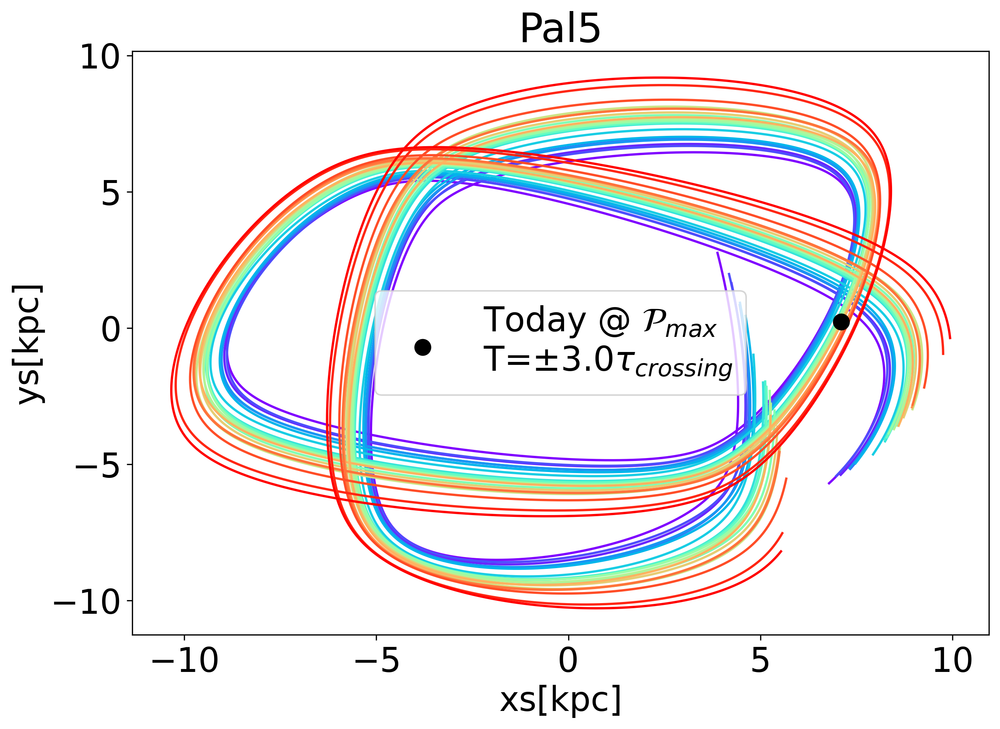
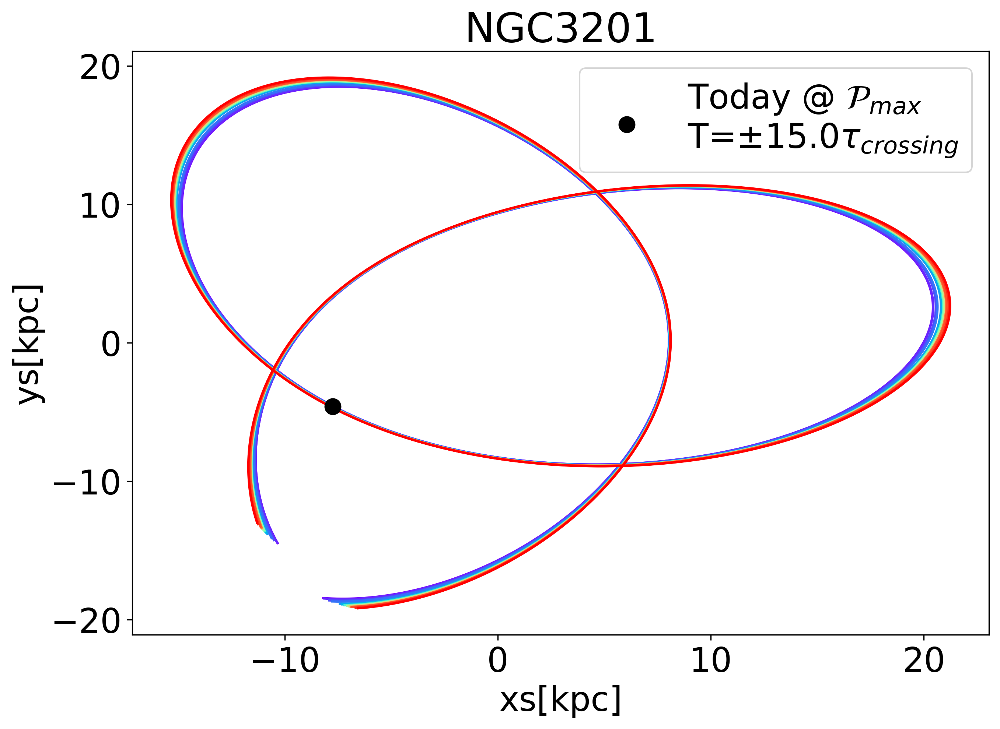
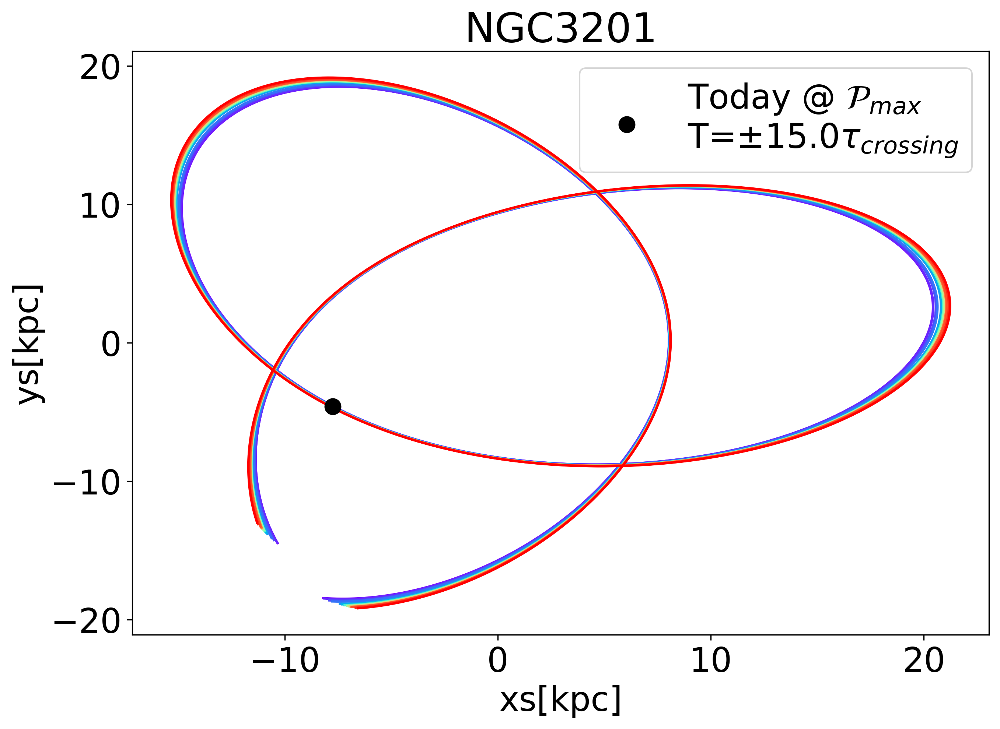

![A reported subset of stellar streams within the Milky Way as reported taken from Ibata et al. (2021). These are plotted in Galactic coordinates, in which the celestial sphere is centered about the Sun, 0^{\circ} latitude and longitude points towards the galactic center. These are the streams within 30 kpc of the Sun and were detected using Gaia Data Release 2 (Gaia Collaboration et al. 2018). In the top panel the stars are colored by proper motion in longitude, while the bottom plot shows the stars colored in proper motion in latitude.](images/ibata-2021.jpeg)
Day Month 2025
words
To the victims of WWII
Driven by sheer curiosity and enabled by advances in technology, in the early 1600s, Galileo turned the “Dutch perspective glass" toward the heavens and began the modern era of astronomy. Then, in 2013, the European Space Agency launched the Gaia space telescope, tasking it with providing precise measurements of the positions and velocities of billions of stars (Gaia Collaboration et al. 2016). This dataset represents a statistically significant sample of stars, constituting 2-3% of the total number within the Galaxy. The combination of this vast dataset with the revolutionary advances in machine learning techniques has accelerated the discovery of what we call “stellar streams." Stellar streams are distinctive groups of stars that exhibit coherent motion, tracing elongated, arc-like patterns across the celestial sphere. An illustrative sample of these stellar streams is presented in Fig. 1.1. This figure showcases the work of Ibata et al. (2021), who have identified and cataloged over 60 such streams within our Milky Way.
These remarkable findings served as a profound source of inspiration for the inception of this thesis. They ignite a series of fundamental questions: Where do these stellar streams originate? How many more of these celestial ribbons exist in the Galaxy, awaiting discovery? What insights can we glean about the gravitational dynamics of our Milky Way through their study? And what other invaluable information can be inferred from them? This thesis is dedicated to addressing these overarching questions by embarking on a journey to model the formation of stellar streams that emerge from Galactic globular clusters.
The fundamental question of where stellar streams originate is well understood. Stellar streams emerge from stars that have liberated themselves from their original stellar systems, courtesy of the forces generated by tidal interactions. Since stellar systems possess are not points and have spatial extent, the region closer to the galactic center of mass, around which they orbit, is subject to a stronger gravitational pull compared to the far side. From the vantage point of the system’s center, it appears as though both sides of the extended body are gradually pulled away from the center, culminating in the disintegration of the system and the eventual escape of stars.
This scenario is common for two reasons. The first being that in systems tend to be more massive in the center, always giving rise gravitational fields with gradients, although idealized examples exist such as a uniform infinite sheet of mass. Additionally, self gravitating stellar systems are common. Consequently, stellar streams are ubiquitous across the universe. They materialize when a smaller object is drawn into the gravitational clutches of a larger, more massive counterpart. An illustrative example is the Sagittarius stream, a relic of stars that once belonged to a dwarf galaxy entirely consumed by our Milky Way (Ibata, Lewis, et al. 2001). Notably, similar streams may be found in other galaxies, as is the case with the stream encompassing Andromeda (M31) (Ibata, Irwin, et al. 2001).
Another intriguing source of stellar streams that could account for the observed streams in Fig.1.1 is none other than globular clusters. Globular clusters are stellar systems characterized by containing between \(10^5-10^6\) stars arranged in a spherical distribution. The very first stellar stream known to originate from a globular cluster was Palomar 5, as documented in (Odenkirchen et al. 2001). In such an early study, the discovery of this streams involved identifying an over-density of stars in the vicinity of a globular cluster, followed by a meticulous separation of true stream members from false positives based on color-magnitude data (Odenkirchen et al. 2003). Kinematics at the time were not available for large amounts of stars. Interestingly, Odenkirchen et al. (2009) revisited the Palomar 5 stream using the Very Large Telescope (VLT) to collect line-of-sight velocity measurements. They were able to confirm that the stars within the stream exhibited matching motion to those within the originating cluster. This methodology is starkly contrasted by those in Ibata et al. (2021), whose search was agnostic. Thanks to the large amounts of data, streams were searched for all over the celestial sphere without targeting specific regions of interest. An interesting consequence of this, is that many of the streams showcased in Fig.1.1 do not have known progenitors.
Stellar streams serve as invaluable diagnostic tools for investigating various aspects of our Milky Way galaxy. One of the pressing mysteries is the distribution of dark matter. An interesting characteristic of stellar streams is that they generally trace the orbit of the progenitor. By doing so, they can be used to perform inference problems to constrain the gravitational potential of their host galaxy, as highlighted by prior studies such as Varghese, Ibata, and Lewis (2011).
Moreover, the utility of stellar streams in probing the gravitational field within which they orbit opens the door to intriguing tests of different cosmological hypotheses. A striking example is the GD-1 stream, a well-known stellar stream that has been employed to scrutinize various scenarios, as documented in (Price-Whelan and Bonaca 2018). Currently, the question of whether globular clusters are formed within dark matter subhalos remains uncertain. A notable investigation by Malhan et al. (2019) utilized numerical simulations to demonstrate that the diffuse stellar debris surrounding the GD-1 stream presents compelling evidence of its progenitor cluster forming within a dark matter halo.
Further enriching our understanding, (Bonaca et al. 2021) explored the unique ‘gap’ within the GD-1 stream, conducting detailed numerical simulations to constrain the size and mass of the perturbing influence responsible for this feature. Intriguingly, their findings challenge the compatibility of observed gaps with the sizes of dark matter subhalos predicted by the \(\Lambda\)-CDM cosmological model. These compelling lines of inquiry underscore the multifaceted role of stellar streams in advancing our knowledge of the Milky Way’s dynamics and the nature of dark matter.
Unlike the aforementioned studies, my research focuses on examining the collective tidal debris originating from all of the galactic globular clusters, rather than concentrating solely on individual stellar streams. To do so, I leverage a data set of their current known properties that has been refined over the years across multiple studies. In Baumgardt and Vasiliev (2021), the authors harnessed a diverse range of data sources, including Gaia DR2 data, the Hubble Space Telescope, and other datasets from the astronomical literature and subsequently determined accurate distances to a multitude of Galactic globular clusters. Furthermore, Baumgardt (2017) use N-Body modeling to construct a staggering 900 simulated globular clusters under various initial conditions, subsequently fitting these models to observed clusters to delve into their internal properties. Building on this foundation, the N-body models were extended to encompass additional galactic globular clusters through the integration of data from the Hubble Space Telescope and Gaia DR2, as detailed in Hilker et al. (2020). This comprehensive work initiated an invaluable online data repository designed to store the kinematic and structural parameters of galactic globular clusters (Baumgardt and Hilker 2021). Initially, this catalog contained orbital and internal properties for 145 globular clusters. With the advent of the third data release from the Gaia mission (Gaia Collaboration et al. 2021), this dataset has expanded its coverage to include a total of 165 globular clusters (Vasiliev and Baumgardt 2021). These datasets now serve as the foundation for the initial conditions in our simulations, facilitating a more in-depth examination of the tidal debris from galactic globular clusters.
In the subsequent sections of this report, I describe key aspects of our research. I begin by providing a detailed exploration of the physics underlying tidal stripping in Section 2.1. Next, in Section 3.1, I explain the computational techniques and methodologies employed in our research. Section 4.1 offers a comprehensive summary of the results, some of which have already been published in (Ferrone et al. 2023). Following this, I present preliminary findings from ongoing work, which is currently in the process of being assembled for publication.
In this section, I explain the theoretical framework necessary for understanding and implementing our numerical simulations.
It is intriguing to draw a comparison between ’stellar dynamics’ and ’celestial dynamics.’ In essence, this involves contrasting the motion of stars within a galaxy with the motion of celestial bodies within our solar system. In the solar system, the gravitational field is known to high precision. Typically, one starts by considering the Sun and then introduces additional complexities as required by the specific problem at hand. For instance, if the goal is to send the James Webb Space Telescope into orbit around the Sun-Earth \(L_1\) Lagrange point, a first-order computation does not necessitate the inclusion of all other planets in the system. Similarly, if the aim is to investigate the long-term evolution of comet orbits, one considers the effects of the Sun and Jupiter on the orbit of the comet, perhaps Saturn as well. In essence, the approach entails identifying the most influential bodies in the system and then applying principles derived from the restricted three- or four-body problem.
In the realm of galactic dynamics, the paradigm differs significantly. To begin with, we are dealing with an immense number of stars—billions, to be precise. However, when considering the orbits of bodies within the Galaxy, we need not account for direct star-star interactions. A compelling rationale for this can be found in Chapter 1.2.1 of Binney and Tremaine (2008), where the authors demonstrate that direct stellar encounters are exceedingly rare, with their cumulative effects on significantly changing a star’s momentum being substantial only after a staggering timescale of 10\(^{16}\) years—a duration far surpassing the age of the universe.
As a result, our focus shifts from individual stars to the continuous density distribution of stars throughout the Galaxy. Consequently, the paradigm in galactic dynamics revolves around employing observational evidence to constrain the mass adistribution, ultimately leading to the determination and validation of the gravitational field. This process hinges on arguably one of the most pivotal equations in dynamics, known as Poisson’s equation:
\[\nabla^2 \Phi = 4\pi G \rho.\]
To present this equation in a more intuitive fashion, we can shift our focus from examining the Laplacian of the potential to analyzing the divergence of the gravitational field. This is feasible because the gravitational field is ’conservative,’ signifying that it arises from the gradient of a scalar-valued function, which is the gravitational potential. In other words, we can express this relationship as: \(\nabla \Phi = - \vec{g}\). The negative sign signifies that the gravitational force doesn’t act in the direction of the steepest ascent, but rather in the direction of descent. Consequently, through this substitution, Poisson’s equation can be reformulated as: \[\nabla \cdot \vec {g} = -4\pi G \rho,\] This equation provides a captivating physical insight: if we visualize a gravitational field as a fluid, a mass behaves like a ’sink.’ As the density increases, the rate at which this ’matter-fluid’ flows toward the mass also intensifies. Moving forward, it’s valuable to approach Poisson’s equation in integral form, which aids in determining the mass distribution of the gravitational field. This is achieved by initially integrating over a volume and subsequently applying the divergence theorem. The theorem allows us to transition from evaluating the divergence of the gravitational field within a volume to instead considering the flux passing through a surface.
Simultaneously, by performing a volume integral over the density, we can derive the mass profile. The key challenge lies in selecting appropriate integration limits to ensure that the gravitational field and the normal vectors of the chosen surface are consistently parallel. Consequently, the right-hand side of the equation is often treated as: \[\int \left(\nabla \cdot \vec{g} \right) dV = \oint \vec{g} \cdot d\vec{S} = g SA.\] Simultaneously, the right hand-side is treated as: \[4\pi G \int \rho dV = 4\pi G M_{\textrm{enc}},\] where \(M_{\textrm{enc}}\) is the mass enclosed within the same surface. In the end, these two quantities can be related: \[\label{EQ:force_from_enclosed_mass} \vec{g} = \frac{4\pi G M_{\textrm{enc}}}{SA} \hat{n},\] where the unit vector is re-introduced given the symmetry chosen symmetry of the problem. This quickly gives rise to the familiar Keplerian case, when the mass enclosed is a point mass and the equi-potential surface is a sphere, i.e. \(SA=4\pi r^2\), and we will have re-derived Newton’s law of gravitation: \(\vec{g} = \frac{G M}{r^2} \hat{r}\).
A series of exercises can subsequently be undertaken. If a high degree of symmetry is present, and a chosen density distribution is given, one can straightforwardly determine the gravitational field. Some basic exercises include finding the gravitational field of: a point mass, a uniform sphere, a sphere with increasing mass, an infinitely large sheet, and so on. The reverse approach is also possible, in which one first selects the form of the potential and then applies the Laplacian to deduce the density distribution. An example, and a potential that I employ in my thesis, is the Plummer distribution:
\[\Phi(r|M,b) = \frac{GM}{\sqrt{r^2 + b^2}}.\] This can be understood as a point mass that has been smeared by some characteristic length, \(b\). There exists another famous model which applies the same softening principle, the Hernquist: \(\Phi(r) = \frac{GM}{r + b}\) (Hernquist 1990). Additionally one can move to distributions with cylindrical symmetry, an example of a model I employ in my thesis is the Myamoto-Nagai (Miyamoto and Nagai 1975): \[\Phi\left(R,z|M,a,b\right) = \frac{GM}{\sqrt{R^2 + \left(\sqrt{z^2 + b^2} + a\right)^2}},\] where \(a\) is the characteristic disc length, and \(b\) is the characteristic disc height. Interestingly, if \(a\) is set to zero, a Plummer distribution is recovered. Another important model that I will present here is the Allan-Santillian Halo model. But first, there is an important concept to introduce that is often used as a diagnostic tool for galaxies, known as the ’rotation curve.’ In essence, we can measure the net rotation of a galaxy by determining the rotational speed of its constituent stars. A body in a circular orbit has all of its kinetic energy in rotational velocity, and thus the centripetal force counterbalances gravity when \(\frac{v_c^2}{r} = g\). We can use EQ. [EQ:force_from_enclosed_mass] to relate the circular velocity to the enclosed mass, as in the case of spherical symmetry, as: \[v_c = \sqrt{\frac{G M_{\textrm{enc}}}{r}}.\] Considering this relationship, and the empirical observation that many external galaxies exhibit nearly constant rotation curves at greater distances, C. Allen and Martos (1986) proposed a halo potential characterized by mass increasing linearly with distance, resulting in a consistent rotational speed. This concept can be mathematically expressed through the following power law: \[M_{\textrm{enc}}\left(r|M_0,\beta,\gamma\right) = \frac{M_{0}\left(r/\beta\right)^{\gamma}}{\left(1+\left(r/\beta\right)\right)^{\gamma-1}}.\] In this formulation, the mass diverges, rendering the model non-physical. Therefore, \(M_0\) doesn’t represent the total mass but rather serves as a parameter defining the rate at which mass accumulates with increasing distance. On the other hand, \(\beta\) denotes a scale length parameter, indicating distances under which mass accumulation is minimal. This potential is referred to as a ‘halo’ potential because it aims to simulate the presence of the dark matter halo enveloping the Galaxy. It’s worth noting that, in practice, halos contribute less to the interior of galaxies when compared to visible matter. Another essential consideration is determining the radius at which to truncate the halo. In our article, we adhered to the convention proposed in earlier studies, choosing to truncate it at 100 kpc. This yields the following potential: \[\Phi\left(r|M_t,\gamma,\beta,r_\mathrm{c}\right) = -\frac{GM_t}{r} - \frac{GM_t}{\left(\gamma-1\right)\beta}\left.\left[\frac{\left(\gamma-1\right)}{1+\left(r'/\beta\right)^{\gamma-1}} - \ln\left(1+\left(r'/\beta\right)^{\gamma-1}\right)\right]\right|_{r_c}^{r},\] where \(r_0\) is the truncation radius, \(\gamma\) is the power parameter whose best fit value was found to be 2.02, and \(M_t\) is the total mass. These values for all of the can be found in Table 1 of Ferrone et al. (2023).
It is important to note that the Laplacian is a linear operator, i.e. \(\nabla^2\left(a_0\Phi_0 + a_1\Phi_1\right) = a_0\nabla^2\Phi_0 + a_1\nabla^2 \Phi_1\). Likewise, the right hand-side of Poisson’s equation is multiplication, which is a linear. Therefore both the total potential and the total density of a system can be described as a sum of simpler parts:
\[\nabla^2 \left(\Phi_0 + \Phi_1 + \dots + \Phi_N \right) = 4\pi G \left(\rho_0 + \rho_1 + \dots + \rho_N \right).\] This is fundamental when creating models and allows us to dissect the Milky Way into parts based on different pieces of observational motivation. This is what is done by many Galactic potential models: Christine Allen and Santillan (1991), (McMillan 2017), and lastly, the potential model that we employ this this work, Pouliasis, Di Matteo, and Haywood (2017). This paper presents two models and compares them the older model of Christine Allen and Santillan (1991). One of the models consists of a small central bugle described by a Plummer, two Miyamoto-Nagai disks, and a Allen-Santillian halo. The second model consits of two discs and the dark matter halo only.
In this thesis, my objective is to simulate the integration of star-particles’ orbits within Galactic globular clusters and observe their escape, forming tidal tails. A crucial aspect is the accurate establishment of initial conditions for these star-particles. To achieve this, I have drawn inspiration from chapter 4 of Binney and Tremaine (2008), which have informed this section. To begin, the distribution of stars within the system of interest is described by a six-dimensional distribution function over the phase space variables, denoted as \(f\left(\vec{x},\vec{v}\right)\). Given that this is a distribution function, it is inherently normalized. Consequently, when integrated over the phase space variables, the result is equal to 1: \(\mathcal{P}=\int f\left(\vec{x},\vec{v}\right) d^3\vec{x}d^3\vec{v}=1.\) Another assumption that is made in DF modeling is that the phase-space volume is constant. i.e. \(\frac{d f}{dt}=0\). By applying the derivative and chain rule, we obtain: \[\frac{df}{dt} = \frac{\partial f}{\partial t} + \frac{\partial f}{\partial \vec{x}}\cdot\frac{d\vec{x}}{dt}+\frac{\partial f}{\partial \vec{v}}\cdot\frac{d\vec{v}}{dt} = 0.\] In practice, this equation is stating that stars are not being created or destroyed, which is not strictly true but satisfactory for our purposes. For instance, stars in globular clusters are very light and not massive enough to go super nova. Additionally, stars within globular clusters are old, and gas-less thus are not creating stars.
Next, this equation is manipulated for various physical configurations, i.e. if this mass distribution is spherical, or if the velocity of the stars are isotropic (equally random in all directions), or if there is anisotropy, i.e. a correlation between the velocities of stars. In my thesis thus far, I have analyzed one of the simplest cases, an Isotropic Plummer distribution. To do this, I have taken the result that the distribution function depends only on the energy as: \[\label{EQ:plummerDF} f\left(E\right)\propto E^{-7/2},\] Here, the energy, denoted as \(E\), combines the kinetic and potential energies, and it is expressed as: \(E=\frac{1}{2}v^2 + \frac{GM}{\sqrt{r^2 + b^2}}\). Armed with this knowledge, we can formulate a set of initial conditions for a globular cluster, taking into account its specific mass and characteristic radius.
Inverse transform sampling is a highly practical technique for generating a set of discrete realizations from any probability density function. In theory, it operates as follows: Let \(\mathcal{F}\) be the cumulative distribution function (CDF) of a given probability density function, denoted as \(f\): \[\mathcal{F}\left(x\right) = \int_{-\infty}^{x} f\left(x'\right)dx'.\] The probability of drawing any number \(x\), to be less than \(x_0\), is the value of the CDF at \(x\): \[\mathcal{P}\left(x < x_0\right) = \mathcal{F}\left(x\right).\] Since CDFs are monotonically increasing and one-to-one with the independent variable, we can substitute: \[\mathcal{P}(F(x)<F(x_0)) = \mathcal{P}(x<x_0).\] Now we may introduce a random variable \(Y\), whose value is equally probably between [0,1], which is described by a DF of: \[f(y) = \begin{cases} 1 & \text{if } y \in [0,1] \\ 0 & \text{otherwise} \end{cases}\] We can substitute, stating that the probability of drawing a uniform random value between [0,1] is the same probability of drawing a value \(x\) as being less than the value of interest: \(x_0\). \[\mathcal{P}\left(Y<\mathcal{F}(x_0)\right) = \mathcal{P}(x<x_0).\] Again, since the CDF and \(x\) are monotonically related and one-to-one, we can apply the inverse transform to the left hand side: \[\mathcal{P}\left(\mathcal{F}^{-1}(Y)<x_0\right) = \mathcal{P}(x<x_0),\] which in turn leads to the desired result that: \[\mathcal{F}^{-1}\left(Y\right) = x.\] In practice, you can visualize this equation as follows: imagine plotting any CDF against the independent variable, and then randomly drawing horizontal lines with heights between [0,1] from negative infinity. Observe where these lines intersect the CDF, which determines the corresponding \(x\) values.
For instance, consider the Plummer sphere. We wish to sample this distribution to find a set of initial conditions for \(N\) particles. The CDF of the normalized mass distribution is as shown in Fig. 2.1. The fraction of the total enclosed mass, denoted as \(M_X\) as a function of distance scaled to the characteristic length, \(r_X = r/b\), is: \[M_X = \frac{r_X^3}{\left(1+r_X^2 \right)^{3/2}}.\] The plot shown in Fig. 2.1 has a scale radius of 10.

Applying inverse transform sampling to this mass distribution provides the radial distances from the center of the system. Next, we need to find the angular positions on the unit sphere. One may naively attempt to uniformly sample the polar and azimuthal angles, \(\theta,\phi\), however this would incorrectly bunch up points at the poles. One must instead consider a DF in which sampling equally probable in all areas. The argument is as follow, first: \(\int f dA' = 1\) where we are integrating over a unit sphere. We know that \(\int dA = 4\pi\), thus, \(f dA' = (1/4\pi) dA\). Note that \(dA'\) does not equal \(dA\). Next, on a sphere the infinitesimal surface area is \(dA = \sin(\theta)d\theta d\phi\). We can now related this to the DF, \(f=(1/4\pi)\sin(\theta)\) and \(dA' =d\theta d\phi\). This DF is used to find the CDF, which is then used to randomly sample the angles. Notice that it does not depend on \(\phi\), which is thus sampled from a uniform DF, which is a linear CDF that ranges [0,1] and runs over [0,\(2\pi\)].
Lastly, sampling the velocities is not independent from the from the position, so we must consider the conditional DF: \(f(v|r)\) from Eq. [EQ:plummerDF]. The number density of particles at a point, \(\vec{x}\), is found by integrating the velocities, i.e. \(N(\vec{x})=\int f(\vec{v}|\vec{x})d^3\vec{v}\). Note that another way of writing a probability density function, is \(f'=\frac{dN}{dv}\). Also note that because we are assuming the velocities are equally random in all directions, we may find \(\frac{dN}{dv}\) by integrating then total DF and then differentiate with respect to \(v\):
\[\frac{dN}{dv} = \frac{d}{dv}\int f(\vec{v}|\vec{x}) (v\sin\theta'd\phi')(vd\theta')(dv) = 4\pi v^2 f(v|\vec{x}),\] which gives the number density per particle speed. Note that the angles here are not in physical space but rather velocity space. Lastly, to construct the CDF of this DF, we must know what the proper limits are. The speeds available to this particle range from zero to the escape speed, which is \(v_{esc}=\sqrt{2\Phi(r)}\). Thus, the CDF is: \[\label{EQ:CDF-velocities} CDF(v) = C \int_0^{v<v_{esc}} 4\pi v^2 f(v|\vec{x}) dv,\] where \(C\) is a normalization constant. In practice, we ignore this constant because for each particle position, we find the non-normalized CDF and then divide by the final value to normalize it. This process is visualized in Fig. 2.2. Once the speeds are found, the orientations of the velocity vectors can by found by randomly sampling x,y,z values from uniform random distributions between [-1,1] and then re-normalizing the resultant vector and multiplying it by the final speed.
![An example of inverse transform sampling of the initial velocities. Each CDF is created per particle, since we are sampling the velocities given an initial position. The CDF’s have the functional forms specified by Eqs. [EQ:plummerDF] and [EQ:CDF-velocities].](images/cdf-velocities.png)
With the potential-density pairs discussed in section 2.1.1 and a method in place for generating initial positions within a sphere of star-particles, the stage is set to address a fundamental question: What causes stars to escape from globular clusters?
As any good physicist would do, we will first solve a simpler problem and draw insights from it while considering the more complex problem at hand. Instead of considering the Galaxy exerting a force on a globular cluster, consider the gravitational force from a point mass acting on three points along a line: \(r-\delta r\), \(r\), \(r+\delta r\), where \(\delta r<< r\). We can perform a Taylor expansion to approximate the force to second order at the interior and exterior points. \[F_{inside}=-\frac{GMm}{\left(r-\delta r\right)^2} \sim -\frac{GMm}{r^2}\left[1+\frac{2\delta r}{r}\right]\]
\[F_{outside}=-\frac{GMm}{\left(r+\delta r\right)^2} \sim -\frac{GMm}{r^2}\left[1-\frac{2\delta r}{r}\right]\] When describing these forces relative to the center of mass of the body located at \(r\), we subtract the force vector upon the center and see that the opposite sides of the body are being ripped away from the center with a force:
\[F_{\mathrm{tidal}}\sim 2GMm \frac{\delta r}{r^3}.\] By positioning an extended body in a gravitational field where the gravitational pull is stronger closer to the center than at a greater distance, it results in tidal forces. It’s worth noting the functional form of the tidal force originating from the center of mass of the object: this force increases linearly with distance from the center of the object. Additionally, it follows an inverse-cubed relationship between the distance to the host, making it considerably weaker than the gravitational force.
This is a suitable qualitative comparison. Even though the galactic gravitational field is not Keplerian, as in the previous example, it’s well-established that the gravitational field still exhibits a gradient and is more pronounced toward the center. Furthermore, globular clusters are inherently extended, spherical bodies. Therefore, based on the previous example, we anticipate that globular clusters will undergo deformation along the radial direction, with those farther from the center cluster experiencing more significant deformation than those situated farther away.
Another simpler system to draw parallels with, as we aim to establish a theoretical conceptual framework, is the restricted three-body problem. In this scenario, we analyze two masses that mutually affect each other and a third particle that doesn’t exert any gravitational force but is influenced by the other two bodies. A well-known instance of this is the Sun-Earth-Spacecraft setup. While the theory for this section will be further elaborated in the thesis, my objective here is to offer a broad overview of the mechanics.
In essence, when examining the restricted three-body problem, we further simplify this scenario. Initially, we assume that the two larger bodies are in circular orbits around the center of mass. This enables us to establish a non-inertial reference frame that rotates at a constant angular velocity, matching that of the two larger bodies. Subsequently, we analyze the situation in which the third particle orbits within the same plane as the two massive bodies. Despite these simplifications, we can derive potent physical tools for comprehending tidal phenomena. Firstly, we begin by formulating the Lagrangian of the third particle: \[\mathcal{L}_{\mathrm{inertial frame}} = T(\dot{x},\dot{y},\dot{z}=0)-U(x,y,z=0,t)\] When we analyze the problem within an inertial frame, the potential energy is time-dependent motion since the larger two bodies are in motion with respect to the reference frame, leading to increased complexities. Consequently, we transition to a non-inertial reference frame, rotating at the same angular velocity as the two massive bodies. Given our simplification of the problem to circular orbits, the massive bodies remain fixed at points along the x-axis. While this approach eliminates the time dependence of the potential energy, it introduces a spatial dependence to the kinetic energy: \[\mathcal{L}_{\mathrm{rotating frame}} = T(x,y,z=0,\dot{x},\dot{y},\dot{z})-U(x,y,z=0)\] Recall the two-body problem, where we introduced polar coordinates and observed that the kinetic energy also depends on the spatial coordinate, expressed as \((1/2)m\left(\dot{R}^2 +(R\omega)^2 \right)\). To delve deeper into the problem, we shifted this spatial dependence to the potential energy, giving rise to an effective potential energy. The same approach is applied to the three-body problem. In this case, we seek locations where the effective potential exhibits critical points. The critical points of the effective potential in the three-body problem are referred to as the Lagrange points.
Much like the two-body problem, the three-body problem exhibits distinct categories of orbits based on the total energy. When the total energy is positive, bodies follow hyperbolic orbits; zero energy results in parabolic orbits; negative energy leads to bounded eccentric orbits, and the minimum energy corresponds to circular orbits. Just as in the two-body problem, the three-body problem can be subdivided into different “realms” of possible orbits based on the total energy.
In one of these realms, a particle is initially bound to the less massive secondary. It can transition to having its dynamics dominated by the primary body if it possesses a certain level of energy. This transition from being influenced by the secondary to the primary occurs at the first Lagrange point. To locate this point, one sets the effective potential equal to zero for a particle along the x-axis in the rotating frame. Remarkably, determining the position of the Lagrange point involves solving a quintic polynomial for which no exact analytic solution exists. Consequently, the location of the Lagrange point is always reported as an approximation.
Another intriguing concept that arises from this analysis is the Hill sphere, which can be defined as the sphere encompassing the secondary body within which its gravitational force prevails in influencing the motion of a test particle. Mathematically, this sphere can be expressed as: \[r_h = a\left(\frac{m_1}{3\left(m_0+m_1\right)}\right)^{1/3},\] where \(a\) is the semi-major axis of the orbit between the two bodies, and there masses are \(m_0\) and \(m_1\).
Another important concept that will serve to interpret the results is phase-mixing.1 Phase-mixing occurs when we an initial distribution of points in phase-space about some location, \(r,v\) with some spread or dispersion, \(\delta r, \sigma_{v}\), naturally spread over time and eventually uniformly distribute themselves over all possible configurations allowed by the system. A good way to estimate the time scale over which this occurs is to look at the maximum difference in frequencies between two particles complete phase space orbits:
\[\tau_{\textrm{phase-mixing}} = \frac{2\pi}{\Delta f}.\] Again, to gain physical insight, we can look to the Kerplerian case for some quick estimates. From Kepler’s third law, we know the relationship between orbit period and the semi-major axis of an orbit: \(T_{\textrm{dyn}}^2\propto a^3\). We can estimate the difference in frequencies by studying the orbits of two points, \(r+\delta r\) and \(r-\delta r\). This would then lead to: \[\Delta f \propto \left(\left(r+\delta r\right)^3 - \left(r-\delta r\right)^3\right).\] Through performing two Taylor expansions by assuming that \(\delta r << r\) and substituting \(T_{\mathrm{dyn}}\) for \(r^3\), we arrive to the relationship that: \[\tau_{\textrm{phase-mixing}} \approx T_{\mathrm{dyn}}\left(1-6\frac{\delta r}{r}\right).\] For the case of the globular clusters, a typical scale size is five parsecs, while their orbital radii are on the scale of kilo-parsecs. This large difference in size renders the characteristic time for phase mixing to be approximately equivalent to a dynamical time, \(\tau_{\textrm{phase-mixing}} \approx T_{\mathrm{dyn}}\).
While this quick analysis gives us some powerful insight, this \(\tau_{\textrm{phase-mixing}}\) time is an under estimate. This is largely due to the fact that the gravitational pull of the globular cluster keeps its star close. Thus, the real phase mixing will be larger than the dynamical time. Nonetheless, this serves as a first order guide. We expect that clusters whose \(T_{\mathrm{dyn}}\) is much less than the duration of the simulation will have totally mixed tidal debris. Whereas those with \(T_{\mathrm{dyn}}\) is comparable or less than the total simulation time will not have phase-mixed debris and thus the escaped star particles will still reside near the cluster.
Not too long ago, I took a course where one of the professors made a rather blunt observation: “You’re bad at math, really bad at math." Surprisingly, this comment was not meant to be a targeted insult to our self-esteem, as he included himself in this comment, but rather a generational observation. He was comparing physicists born before and after approximately 1980, drawing a distinction between those who grew up with computers and those who did not. He went on to say, “There’s just something different about those who couldn’t look solutions up online and had no access to Wolfram Alpha; you can see it in the way they carry themselves."
I’ve spent a lot of time reflecting on his words, and I’ve come to see the truth in them. While I may sometimes romanticize the idea of being so sharp that I could effortlessly use Bessel functions of the first kind to solve partial differential equations right after breakfast, I also appreciate the skill set we’ve gained in exchange: programming. The computer has proven to be a remarkably powerful tool, and it has fundamentally changed the way we approach problem-solving.
When I embarked on this thesis, my primary tools were Python, utilizing libraries like Numpy for data manipulation and Matplotlib for plotting. However, as the scope of my work expanded to writing code for numerical simulations, I found myself diving headfirst into the world of Fortran. At the same time, this transition also involved mastering SSH connections to remote machines, writing code with task parallelization, submitting jobs to supercomputers, and efficiently managing a complex code project using Git. Additionally, I had to navigate the challenges of handling and processing hundreds of gigabytes of data.
At the outset of my thesis, a crucial question I pondered was
how to perform the orbital computations necessary for my
research. Initially, our published work in Ferrone et al. (2023) relied
on a custom Fortran script that we had developed. However, as our
project evolved and our ambitions grew to include more complex physics,
we recognized the need for a substantial overhaul of the code. I was
well aware of the common programming pitfall of reinventing the wheel
when existing solutions are available. To explore alternative options, I
delved into the Python package known as Galpy (Bovy 2015),
which offers a range of useful functions for computing orbits within a
Galactic context.
While Galpy had its merits, it lacked the flexibility
required for accommodating the time-varying potentials we needed in our
simulations. As a result, I embarked on a journey to develop my own
extensive code, tailored to the specific demands of my research.
While this code is not yet fully prepared for public release, it can be accessed at https://gitlab.obspm.fr/sferrone/gc-tidal-loss. The code is a hybrid of Python and Fortran. Fortran is utilized for orbital computations, whereas Python is employed for data management and analysis. The subsequent three sections provide detailed insights into the code: integration units are explained in Section 3.1.1, a concise code walk-through is presented in Section 3.1.2, and the handling of uncertainties is discussed in Section 3.1.3.
In astronomy, we employ a distinct set of units that defies the conventions of the International System of Units (SI). This deviation is warranted due to the vast cosmic distances, time scales spanning the age of the universe, and the immense masses of celestial objects, rendering the use of meters, seconds, and kilograms impractical and unintuitive. Furthermore, from a computational perspective, it is advantageous to work with unit values that are close to unity rather than dealing with quantities that span several orders of magnitude, as this can help reduce round-off errors.
In our astronomical system of units, we rely on three fundamental dimensions: mass, time, and length. But in fact we will choose length, velocity, and mass to be the fundamental units and let the time, acceleration, and gravitational constant be derived: \[\begin{aligned} L &= 1 \mathrm{kpc},& V&=1\mathrm{km/s},&M=1\mathrm{M}_{\odot}. \end{aligned}\] These choices offer several advantages. First, the distance from the sun to the center of the galaxy is approximately 8 kiloparsecs (kpc), making the kiloparsec a natural unit for astronomical distances. Line-of-sight velocities are typically measured in kilometers per second (km/s), and the typical speed of stars in the galaxy is on the order of 200 km/s. Using a solar mass as the unit for mass allows for a quick estimate of the number of stars in a system. For instance, galaxies have masses between \(10^{10}\) and \(10^{12}\) \(\mathrm{M}{\odot}\), while globular clusters have masses between \(10^{4}\) and \(10^{6}\) \(\mathrm{M}{\odot}\).
Furthermore, this choice of units will naturally constrain the other units in our system. When converting from SI units, the gravitational constant becomes: \[G = 4.3009 \times 10^{-6} \left(\frac{\mathrm{km}}{\mathrm{s}}\right)^2 \mathrm{M}_{\odot}^{-1} \mathrm{kpc}.\] A great way to remember the new units of the gravitational constant is to first recognize that gravitational potential has units of velocity squared, and subsequently imagine the the Keplerian potential: \(\Phi = G\frac{M}{r}\). Thus, the gravitational constants requires inverse mass and distance to result in velocity squared. Next, the unit of time of time in our system becomes: \[t = \frac{l}{v} = 1 \frac{\mathrm{kpc}}{\mathrm{km}}\mathrm{s}.\] This unit may seem unconventional, but it has a numerical value of approximately 0.98 billion years (Gyr), making the integration units slightly smaller than a billion years. A useful mnemonic to remember this unit derivation is that 1 kilometer per second (km/s) is roughly equivalent to 1 kiloparsec per gigayear (kpc/Gyr). With this understanding, we can quickly estimate the duration of a "galactic year." Given that the Sun has a circular velocity of about 220 km/s at a radial distance of approximately 8 kpc from the Galactic center, it takes approximately 0.22 Gyr or 220 million years to complete one orbit.
Regarding the unit of acceleration, we can derive it from the relation \(g = -\nabla \Phi\), which represents a change in velocity squared per unit length: \(\left(\frac{\mathrm{km}}{\mathrm{s}}\right)^2 \mathrm{kpc}^{-1}\). When multiplied by a unit of time, we once again obtain a unit of velocity. This definition aligns with the concept of acceleration as the time derivative of velocity, where dividing the unit of velocity by the unit of time yields units consistent with the gradient of the potential.
Here, in order to explain the mechanics of the code I wrote for my thesis, I provide a minimum example. Originally, I began writing a minimum working example, however, it became to cluttered for a small first year report. A minimum working example already exists can be provided upon request.
Assuming that you are working in a Jupyter notebook and have already imported the necessary modules and loaded the required data, the initial step for using this numerical integrator is to provide the parameters for the Galaxy:
integrator.setstaticgalaxy(MWgravfield[0],MWgravfield[1])The first argument, MWgravfield[0], specifies the name
of the potential, which tells the code which subroutine to use.
Typically, “pouliasis2017pii" is used. The next argument,
MWgravfield[1], is a Python list of floating-point numbers
representing the parameters of the various components of the potential.
These parameters include the masses and scale lengths. The order and
number of parameters must match the potential you’re using. For example,
“pouliasis2017pii" expects 11 parameters, including the gravitational
constant, four halo parameters, and three disc parameters for thin and
thick discs.
After specifying the potential, you need to provide the initial
positions and velocities of the particles you want to integrate. Each of
the arrays passed should have a length of N, where
N is the number of particles you intend to integrate:
integrator.setinitialkinematics(
GCcoord.x.value,GCcoord.y.value,GCcoord.z.value,
GCcoord.v_x.value,GCcoord.v_y.value,GCcoord.v_z.value)This code snippet provides the positions and kinematics of all
globular cluster coordinates. The .value is included at the
end of each variable because they are Astropy Quantities that include
both numbers and units. Using .value returns the
floating-point number without the unit. Passing an
Astropy.Quantity instance to the Fortran module would
result in an error. Finally, you can set the integration parameters of
the system:
integrator.setintegrationparameters(T.value,dt.value,NSTEP) The previous steps can be understood as initialization. With all the information in place, now the positions and the velocities can be integrated:
xt,yt,zt,vxt,vyt,vzt=integrator.leapfrogintime(
integrator.ntimesteps,
integrator.nparticles)Notice that the number of time steps and particles must be passed as
arguments to this subroutine. This may seem redundant since the number
of particles, \(N\), is known from the
setinitialkinematics, and the number of time steps was
established in the previous step. However, since the values are not
known at compilation time for the subroutine, they need to be passed at
runtime. The orbits of each globular cluster over the course of 1
billion years are shown in Fig. [fig:all-orbits].


After the orbit of the host is obtained, a very similar procedure is followed to create the streams. I.e. first the system must be initialized and then the integration call is made. There are two main differences. The first is that we must now generate the initial positions of the star-particles within a globular cluster. I wrote a code to create the initial conditions as discussed in section 2.1.2.
xp,yp,zp,vxp,vyp,vzp=particleDistributions.isotropicplummer(
G.value,mass.value,halfmassradius.value,NP) Now we shift these positions and velocities to about the globular
cluster of interest, which is identified with a
GCindex.
xi=xp+GCcoord.x.value[GCindex]
yi=yp+GCcoord.y.value[GCindex]
zi=zp+GCcoord.z.value[GCindex]
vxi=vxp+GCcoord.v_x.value[GCindex]
vyi=vyp+GCcoord.v_y.value[GCindex]
vzi=vzp+GCcoord.v_z.value[GCindex]Now the initial positions and integration parameters are established, just as before:
integrator.setstaticgalaxy(MWgravfield[0],MWgravfield[1])
integrator.setintegrationparameters(T.value,dt.value,NSTEP)
integrator.setinitialkinematics(xi,yi,zi,vxi,vyi,vzi)Here is the second main difference, which is that the positions and velocities of the host must also be passed:
thost=np.linspace(0,T.value,NSTEP+1)
integrator.inithostperturber(
thost,
xt[GCindex,0:NSTEP+1],
yt[GCindex,0:NSTEP+1],
zt[GCindex,0:NSTEP+1],
vxt[GCindex,0:NSTEP+1],
vyt[GCindex,0:NSTEP+1],
vzt[GCindex,0:NSTEP+1],
mass.value,
characteristicradius.value) During the computation, the Fortran module will evaluate the current time of the system, determine the position of the host, and compute its force on all of the particles specified in the initial conditions. You might wonder why velocities are passed, given that the gravitational force only requires the position. The reason is that during the integration, we evaluate the energy of each particle relative to the center of mass to determine whether the particle is bound or unbound. Therefore, we must know the host’s velocity to calculate the kinetic energy of each star particle. Finally, the integration of the particles is executed using the following command:
integrator.leapfrogtofinalpositions()This subroutine integrates the positions of the particles to the end.
In this subroutine, we do not need to pass the number of steps nor the
number of particles since we are not saving the intermediate positions.
Therefore, we do not need to allocate arrays at run-time, unlike the
previous leapfrogintime subroutine. The output of this
example is shown in the right panels of Fig. [fig:all-orbits], where the orbit of
the globular cluster of interest, Palomar 5, is shown in blue. The
initial configuration of the Plummer system is depicted with the green
dots. Each particle is integrated for 1 Gyr, all the while experiencing
the gravitational forces from both the galaxy and the Plummer sphere
representing the host. This provides the output shown with the red
dots
There are different types of uncertainty affecting this project: (1) observational uncertainties, (2) modelling uncertainty, and (3) numerical uncertainty. I will briefly discuss each one here, although the final draft of the thesis will include a much more rich discussion.
Regarding the observational uncertainty, most of the quantities reported in Baumgardt and Hilker (2021) are accompanied with errors. We approximate the uncertainties as \(1\sigma\) Gaussian errors. The kinematic properties of the clusters are reported in right ascension (RA), declination (DEC), solar distance \(R_{\mathrm{sun}}\), proper motions in RA & DEC, as well as line-of-sight velocities. Uncertainties are included on all of the above save for RA and DEC, since their uncertainties are negligible compared to the others. Additionally, the uncertainties in the proper motions are correlated, which consider. Regarding the internal dynamics, the dataset includes a rich set of parameters such as velocity anisotropy, and core-density concentration. We do not consider these values since we are using a simplified Plummer sphere. The limitations due to these simplifications are discussed next. From the database, we extract the half-mass radii of the clusters as well as the mass–which contain uncertainties that we consider. In all, for each globular cluster, we create 50 sets of initial conditions. One set of initial conditions contains a realization of the kinematic parameters and a distribution of 100,000 particles. Thus, the possible the uncertainties in the position and kinematics drive the orbital uncertainty while the mass of the cluster drives the uncertainty in the internal dynamics. Examples of different orbits based on the sampling of the initial conditions for pairs of phase space coordinates for three globular clusters is presented in Fig. [fig:orbit-uncertainties].
 

 

All models are wrong. Therefore, as a numerical modeler, it’s critical to ask questions such as, ‘How accurate is my model? What specific inquiries can my model address? And conversely, what questions is it incapable of answering?’ It’s imperative to recognize and acknowledge the limitations of your model.
In this experiment, there are primarily two significant sources of modeling uncertainties. The first pertains to how we represent the gravitational field of the Milky Way, while the second concerns the internal dynamics of the globular clusters.
Numerous gravitational models for the Milky Way exist. In our study, we focused on three specific models. The first two models, as documented in (Pouliasis, Di Matteo, and Haywood 2017), were considered, and we also explored a modified version of a model therein, which incorporates a rotating stellar bar. It’s worth noting that our research aims to explore additional models to determine which ones yield stellar streams that best replicate observations.
Another modeling decision we made concerns the duration for which we integrated the orbits of the globular clusters, which we set at 5 Gyr. This timespan is sufficiently long to induce a notable amount of tidal loss from the globular clusters. Equally important, this period is a safe choice, considering that the Milky Way can be assumed to be in relatively stable equilibrium. To illustrate, the last significant merger event that had a substantial impact on the Milky Way’s mass and equilibrium, involving the disintegration of a satellite—likely Sagittarius—occurred over 5 Gyr ago (Kruijssen et al. 2020).
Furthermore, the internal dynamics of the globular clusters play a crucial role in determining both the rate and the specific stars that are ejected over time. Globular clusters present a unique challenge due to their two-body relaxation time comparable to the typical age of globular clusters, approximately 10 Gyr. An intriguing phenomenon resulting from the collisions between stars within globular clusters is known as "mass segregation." This phenomenon leads to more massive stars tending to migrate toward the cluster’s center, while less massive stars are pushed toward the outskirts.
The study conducted by Balbinot and Gieles (2018) underscored the importance of mass segregation in understanding stellar streams and revealed some seemingly counterintuitive outcomes. For instance, if the mass of a globular cluster increases, one might expect its tidal tails to be brighter due to a higher number of potentially escaped stars. However, mass segregation causes more low-mass stars to escape, which are dimmer, resulting in difficult-to-observe tails.
Properly addressing the internal dynamics of globular clusters is indeed a computationally expensive task. In our current treatment, we adopt an \(\mathcal{O}(n)\) computation time, focusing on integrating particles influenced by a gravitational field only. A higher-order approach would involve considering N-body interactions, which would have a computational complexity of \(\mathcal{O}(n^2)\). However, even this doesn’t constitute the most accurate description of the dynamics. To achieve a more precise representation, one would need to account for the mass distribution of stars within the cluster and establish an initial configuration, potentially following a distribution like the Kroupa mass function (Kroupa 2001).
Furthermore, the presence of binary star systems poses a challenge. Accounting for binary stars would significantly reduce the code’s computational speed because the dynamical timescale for binary star systems is on the order of a few years. This reduction in integration time-step could exceed four orders of magnitude.
Additionally, the issue of stellar remnants and black holes within the centers of globular clusters is worth considering. We’re not suggesting that Newtonian mechanics must be abandoned in favor of general relativity due to black holes in the cluster. However, it’s important to acknowledge that the presence of a very massive object at the system’s center can significantly impact the dynamics, as has been observed (Vitral et al. 2023).
The primary objective of this thesis is to gain insights into the distribution of tidal debris emanating from the entire globular cluster system. As a result, we must make certain simplifications that enable us to make predictions for all approximately 150 globular clusters. This involves Monte Carlo sampling of orbital uncertainties and exploring various galactic potential models. Given the scope of our work, a comprehensive exploration of the internal dynamics to a high degree of precision is currently unfeasible for the entire system. Nevertheless, we may delve into this aspect on a per-cluster basis in the future if higher resolution is deemed necessary.
We find our approach acceptable for several reasons. First, once particles escape from the globular cluster, their motion is largely governed by the Milky Way’s gravitational field. Our primary concern is ensuring the rate at which particles escape from the clusters in our models aligns with reality. Since the primary drivers of mass loss are tidal forces and the three-body problem, we are confident in the results our models yield. Furthermore, Mastrobuono-Battisti et al. (2012) has demonstrated that there is hardly a difference in the morphology of tidal tails when comparing N-body simulations to test-particle simulations.
The numerical accuracy of the orbital solutions is a crucial consideration, as numerical errors can introduce artificial acceleration to particles, potentially leading to an inflated mass loss rate. Numerical uncertainties are primarily influenced by the size of the integration time-step and the chosen numerical method. In our approach, we utilize a leap-frog integration scheme.
To determine an appropriate time-step for each system, we first integrated the star-particles within each globular clusters in isolation for 1 Gyr, employing an initial time-step of \(\Delta t = 10^5~\mathrm{yr}\). During this integration, we calculated the mean energy conservation relative to the initial energy of the system, denoted as \(\langle\delta E\rangle/E_0\). For approximately two-thirds of the clusters, a typical energy drift smaller than \(10^{-10}\) was observed. However, the remaining clusters required higher resolution. Consequently, we reduced the time-step to \(10^4~\mathrm{yr},\) ensuring that the energy drift rate remained below \(10^{-10}\) for all clusters.
In the current version of the code, we have refined the method for evaluating numerical uncertainties. A detailed analysis of this process will be presented in the accompanying published article on our methods. In summary, we expanded our investigation to assess the effects of temporal resolution on the orbits of globular clusters. Given that the dynamical time of a globular cluster within the Galaxy is significantly shorter than the dynamical time of a particle within the cluster, there’s no need for an ultra-short time-step to ensure energy conservation. However, we adjusted the time-step to guarantee that the drift in the final positions of the globular clusters after 5 Gyr is significantly smaller than their characteristic sizes.
\[\tau = \sqrt{\frac{3\pi}{G\rho_c}} \left(1+\left(\frac{r}{b}\right)\right)^{3/4},\]
where \(\rho_c\) is the plummer’s characteristic density: \(\rho_c = \frac{3M}{4\pi b^3}\).
Here, I highlight some select few results that were presented in Ferrone et al. (2023).
All of the tidal debris from the globular cluster from one galactic potential is shown in Fig. 4.1. This highlights that many stellar streams exists, however the tidal debris covers the whole sky and is rather diffuse about the galactic center.
While it is interesting to consider the entire distribution on the sky, it is also interesting to consider the mythologies left by individual clusters. From Fig. 4.1, we see that a rich varieities of morhologies are present and not only the thin stellar streams which are commonly championed in the literature. It is instructive to look at the tidal debris resultant from one globular cluster at a time, to get an intuition for the different morphologies that are available.
In Fig. 4.4, we show case the orbit and tidal debris of NGC 5986. This is a very instructive example. For instance, recalling the discussion on phase-mixing, we note that this cluster has complete many orbits. As a result, the tidal debris completely occupies all possible states that are accessible to the initial conditions. Note that, in the middle panel, I have colored the recently escaped particles in pink. When truncating to the these particles, we do see that they trace the recent past of the cluster as well as the future leg of the orbit. Thus, even when the tidal debris has been phase-mixed, we can still observe a coherrent stream near a cluster.
Next, the cluster’s tidal debris does not cover the entire sky. This is because the apo-center of the orbit is still within the solar circle.
A final interesting note that I wish to discuss in this report, as any good numerical modeler should do, is compare our results to the observations. Fig. [fig:NGC4590] shows tracks of the same stellar stream compiled from three different studies within Mateu (2023). We have remarkable agreement for much of the length of the stream. Notice that our stream goes beyond the observations. This is because the observations are limited. Stellar crowding and extinction in the galactic-mid plane render observations difficult in this region.
Additionally, notice that the model prediction of the stream of the right panel of Fig. [fig:NGC4590]. This galactic model included a bar. An intriguing result is that this demonstrates that the stellar streams can be used a diagnostic tools on the bar. However, a precise explanation as to why the bar reduces the length of the stream instead of, say, cutting the stream, still eludes me.

We want to include more realistic and complex phenomena within the Galactic field to study how this would impact the tidal debris originating from globular clusters. Several paths of investigation are available to us: the stellar bar, the effects of the Magellanic clouds, the in-fall of Sagittarius, giant molecular clouds, dark matter halos, etc. As a first step, we modified the code to allow for the globular clusters to interact with one another. This experiment is nearly finished and ready for a publication. To summarize here, in step 1 of our methods as described in section 3.1.2, we integrate the globular clusters with N-Body interactions. Then, in step 2, we allows the star-particles of a given globular cluster feel the gravitational force of all the globular clusters in the galaxy as well as its host and the galaxy. The results are promising, we have assembled a near complete first draft of a letter focusing on a specific analysis of Palomar 5. Then, we wish to expand the work to all globular clusters in the publication of a full article.
After which, there are three paths that I wish to continue pursuing. (1) including more physics in the simulations. (2) searching for more stellar streams in the real data using the simulation results as a prior. (3) implementing stellar evolution and internal dynamics in the code so that we can create mock-observations.
Thank you for taking the time to read this report. I look forward to returning to you with more results.
Chapter 18 of galaxiesbook.org has largely inspired this discussion.↩︎